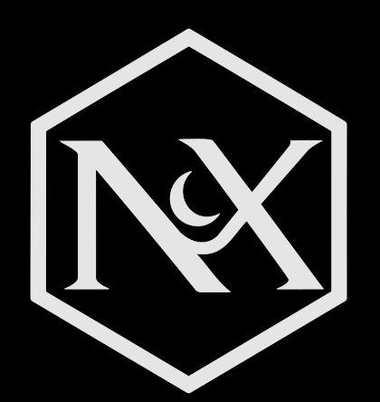

NyxenLast updated 13 September 2026 · applies to Nyxen 1.0.0
The short version. Nyxen is free and made by one person. It runs on your PC and keeps your things on your PC. It comes with no warranty. You are responsible for how you use it, including whether what you do with it is allowed by the games and services you point it at. If you do not agree with that, do not install it.
Nyxen is a Windows application that sits alongside games you already own. It finds and installs mods, reads your Minecraft launchers, tracks achievements, talks to RetroArch, and can connect you to friends running the same app.
It is free. There is nothing to buy inside it, no subscription and no advertising. It is made and maintained by one person as a personal project, not by a company.
It is not affiliated with Valve, Steam, Mojang, Microsoft, Modrinth, Thunderstore, GameBanana, CurseForge, Prism Launcher, RetroAchievements, libretro or any game publisher. Their names appear here and in the app only to say what it works with.
You may install and use Nyxen on computers you control, for as long as you like. You may not sell it, or pass off a modified copy as the original.
You must not use it to break into accounts that are not yours, to distribute malware, or to do anything unlawful. If you do, these terms stop applying to you and you are on your own.
Nyxen can mark Steam achievements as unlocked on your own account, for games you own. That is what the feature is for, and the app will not operate on anyone else's account.
Be clear about what that means:
The app asks for confirmation before it changes anything, and it refuses cases it considers unsafe. Those checks exist to stop accidents, not to make the choice for you. The consequences are yours.
Mods are made by other people and downloaded from their sites. Nyxen finds them and puts the files in the right folder; it does not host, review, scan or vouch for them.
Some features talk to services run by other people. When you use those parts, their terms and privacy policies apply as well as these:
If one of them changes or goes away, the part of Nyxen that used it stops working. That is outside anyone's control here.
Nyxen is a desktop app, so almost everything stays on your machine:
The social side needs a server, because two PCs have to meet somewhere. There are two ways that happens, and they are different in a way worth understanding:
So: do not treat messages as private or encrypted. They are not end-to-end encrypted. Treat them the way you would treat a message on any small forum.
Calls and screen sharing connect the two computers directly where they can. When they cannot, the connection may be relayed by a third party. Share your screen deliberately — it shows whatever is on it.
If you use a server someone else runs, they may remove accounts or content, and they are under no obligation to keep it running or to keep backups.
The assistant is optional and off until you configure a provider. When you use it:
Nyxen is provided as is, with no warranty of any kind, express or implied — including fitness for a particular purpose and non-infringement.
To the fullest extent the law allows, the author is not liable for any damage, data loss, lost saves, broken game installs, account penalties or anything else arising from using this software. You install and run it at your own risk.
Nothing here tries to remove rights you have under the consumer law where you live, because it cannot.
These terms can change when the app changes. The date at the top says when they last did. Continuing to use the app after a change means you accept it; if you do not, uninstall it.
The app may stop being updated at any point. It is a personal project, and nobody is promising a roadmap, a support window or an uptime figure for any server.
You can stop at any time: uninstall it from Add / Remove Programs.
Nyxen is made by Antonio. For a problem with the app, a bug, or a request to remove something from a server run by this site, get in touch through whichever channel you were given the app.
There is no support desk and no guaranteed reply. That is the honest position for a free project made by one person.